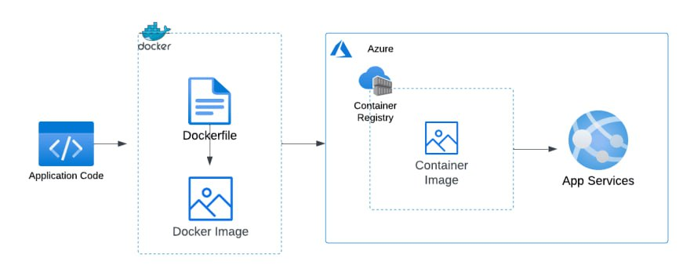
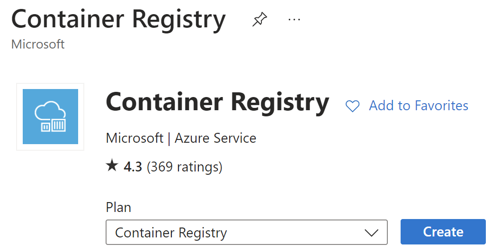
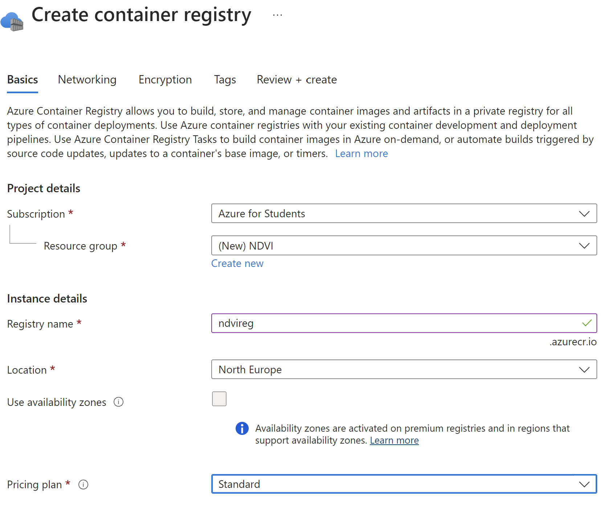
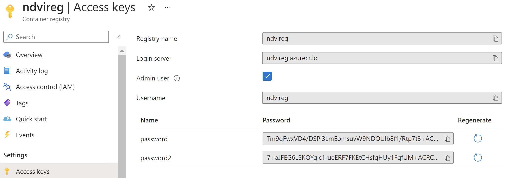
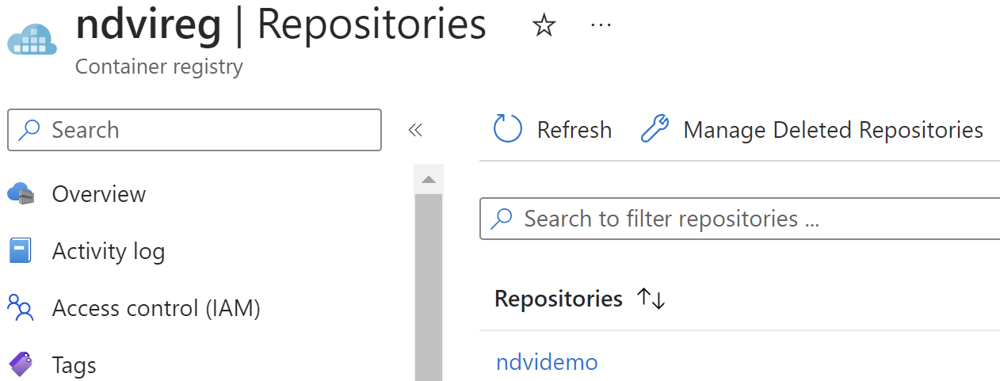
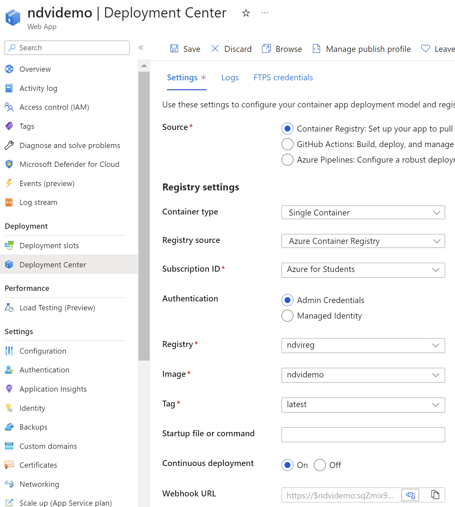
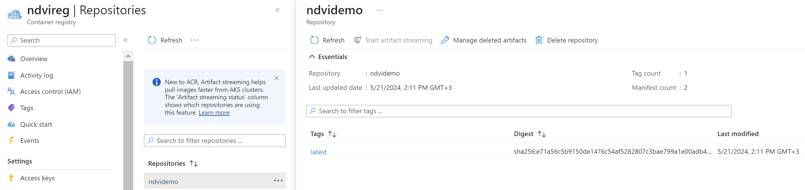
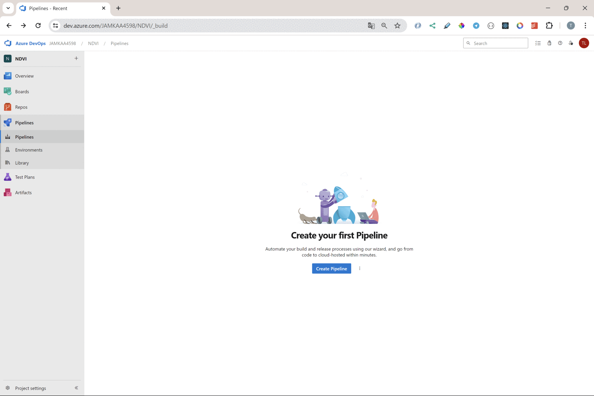
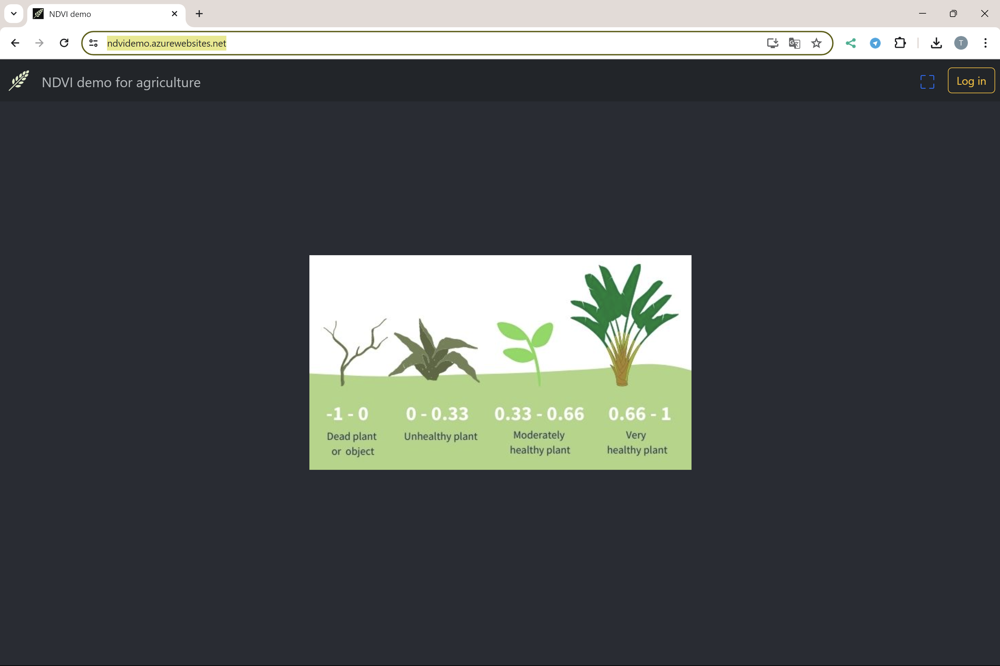
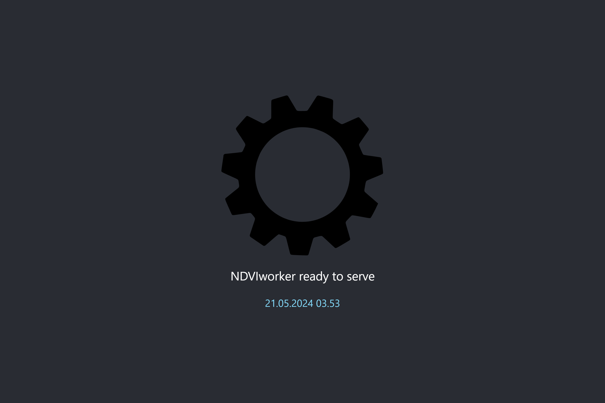

Deployment
The app is deployed to Azure web service as an container. For the MERN-stack frontend code is builded and added to root of backend code.
app.js
app.use(express.static("build"));
The idea
The idea of containerizing an application


Dockerfile
FROM node:18
COPY . .
RUN npm install
CMD ["npm", "start"]
.dockerignore
.node_modules
Container Registry
  
Registry name (Username): ndvireg
Login server: ndvireg.azurecr.io
password: Tm9qFwxVD4/DSPi3LmEomsuvW9NDOUlb8f1/Rtp7t3+ACRApVSqe
password2: 7+aJFEG6LSKQYgic1rueERF7FKEtCHsfgHUy1FqfUM+ACRCBU4qY
docker login ndvireg.azurecr.io
Username: ndvireg
Password: Tm9qFwxVD4/DSPi3LmEomsuvW9NDOUlb8f1/Rtp7t3+ACRApVSqe
Building the Docker Image
docker build -t ndvireg.azurecr.io/ndvidemo:latest .
with command
docker images
can be seen that image is really created
Deploying to Azure
To push the image from your local to the Azure Container Registry
docker push ndvireg.azurecr.io/ndvidemo:latest

Azure Web App
Hosting the container from register

Continuous Deployment

Url for the server
https://ndvidemo.azurewebsites.net
Updating changes
docker build -t ndvireg.azurecr.io/ndvidemo:latest .
docker push ndvireg.azurecr.io/ndvidemo:latest
REMARKS
For some reason the containr registry not always to be updated, so repository nee to be removed before docker push operation.

Pipeline
Azure pipeline on Azure DevOps.
pipeline is triggered by git push
Creating a pipeline
First create a project for Azure DevOps
The source files should be pushed to the repository of the project.
Step by step 
azure-pipelines.yml
Azure Devops generates YAML file defining pipelines for CI/CD (Continuous Integration/Continuous Deployment).
# Docker
# Build and push an image to Azure Container Registry
# https://docs.microsoft.com/azure/devops/pipelines/languages/docker
trigger:
- master
resources:
- repo: self
variables:
# Container registry service connection established during pipeline creation
dockerRegistryServiceConnection: '2b2e35d0-3140-4c01-8409-9e453d42fa6f'
imageRepository: 'ndvi'
containerRegistry: 'ndvireg.azurecr.io'
dockerfilePath: '$(Build.SourcesDirectory)/Dockerfile'
tag: '$(Build.BuildId)'
# Agent VM image name
vmImageName: 'ubuntu-latest'
stages:
- stage: Build
displayName: Build and push stage
jobs:
- job: Build
displayName: Build
pool:
vmImage: $(vmImageName)
steps:
- task: Docker@2
displayName: Build and push an image to container registry
inputs:
command: buildAndPush
repository: $(imageRepository)
dockerfile: $(dockerfilePath)
containerRegistry: $(dockerRegistryServiceConnection)
tags: |
$(tag)
The result
After deployment the application can be get in browser at address
https://ndvidemo.azurewebsites.net/
If frontend app is included with backend the landing view is as following. 
If there is not frontend app included the view of root address looks like this. 